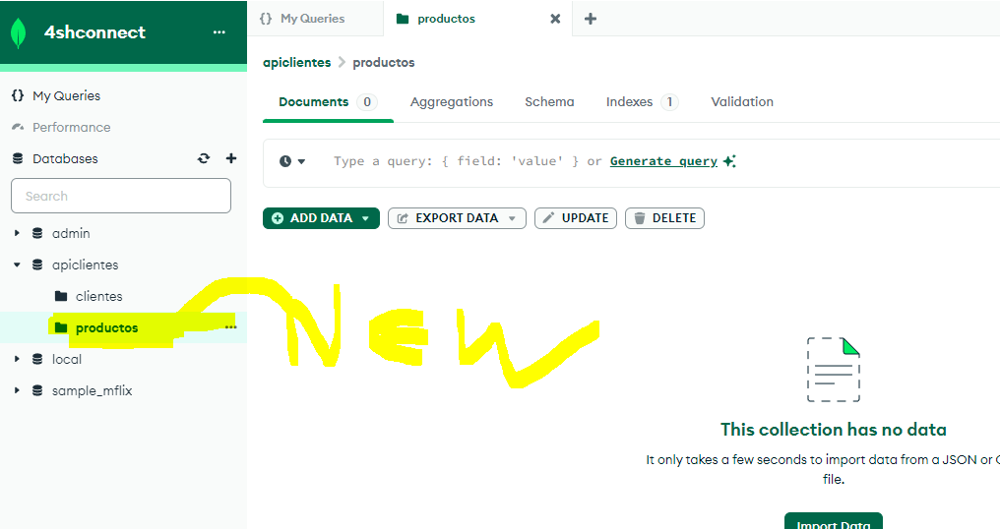
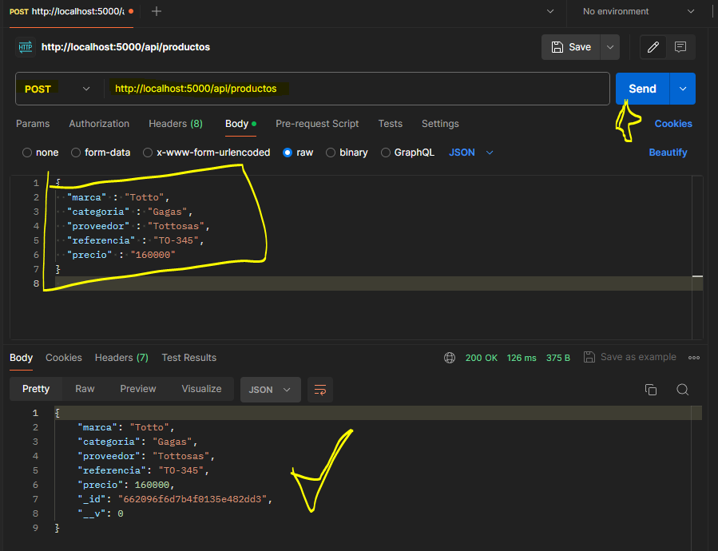
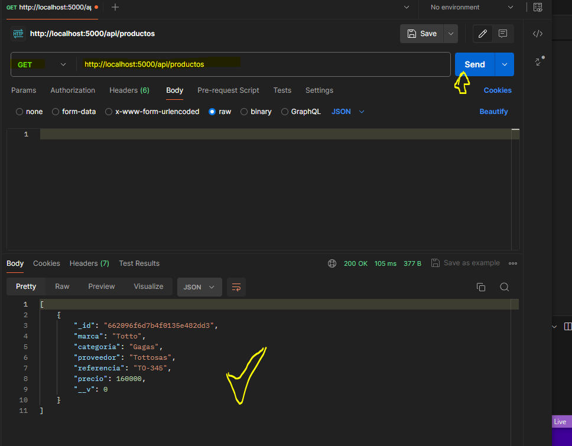
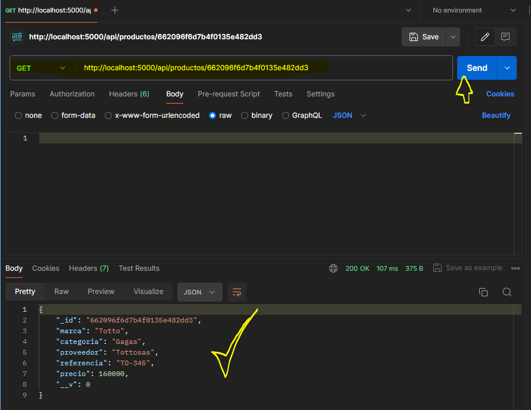
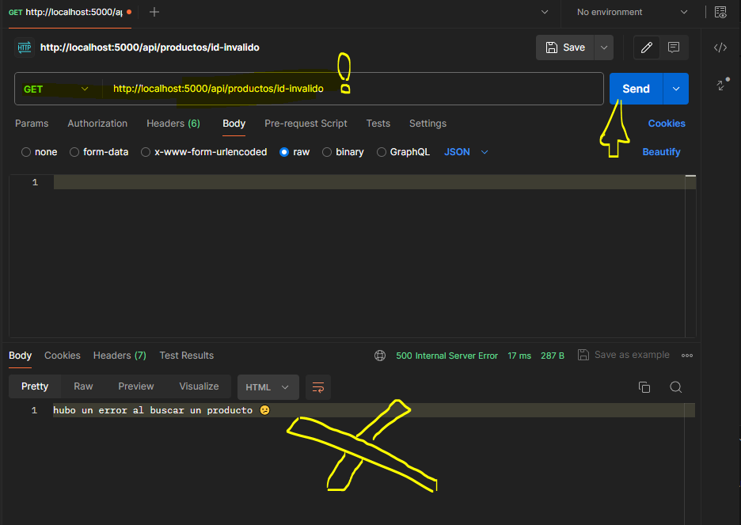
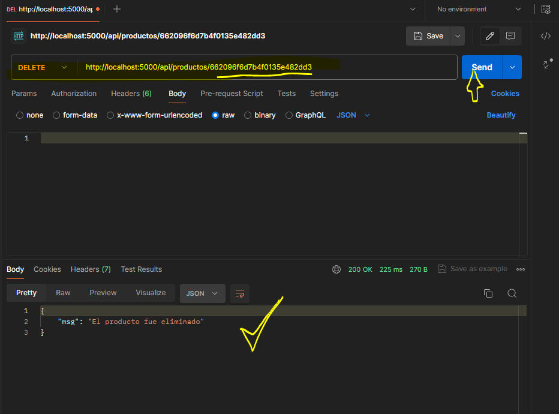
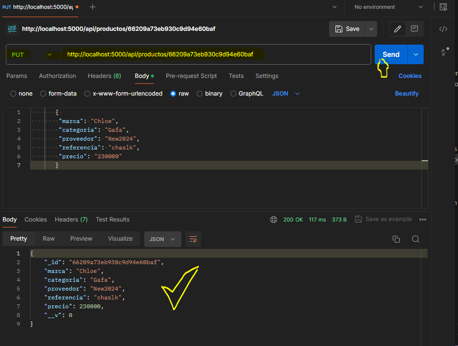

CRUD / Express y MongoDB - Parte 3
En esta tercera parte terminamos de agregar las funciones de mostrarUnCliente, eliminarClientes y modificarClientes para nuestro archivo controllers/ClienteController.js
controller/ClienteController.js
// Exportamos nuestro modelo
const Cliente = require('../models/Cliente');
// Creamos una función para agregar clientes
exports.agregarClientes = async(req, res) => {
try {
let clientes = new Cliente(req.body)
await clientes.save();
res.send(clientes);
} catch (error) {
console.log(error)
res.status(500).send('hubo un error al agregar un cliente 😕')
}
}
// Creamos la función para mostrar clientes
exports.mostrarClientes = async (req, res) => {
try {
const clientes = await Cliente.find();
res.json(clientes);
} catch (error) {
console.log(error)
res.status(500).send('hubo un error al mostrar un cliente 😕')
}
}
//Session27
// Creamos la función para mostrar un solo cliente
exports.mostrarUnCliente = async(req, res) =>{
try {
let clientes = await Cliente.findById(req.params.id);
if(!clientes){
res.status(404).json({msg: "No se encuentra cliente con ese ID"})
}
res.send(clientes);
} catch (error) {
console.log(error)
res.status(500).send('hubo un error al buscar un cliente 😕');
}
}
// Creamos la función para eliminar clientes
exports.eliminarClientes = async(req, res) =>{
try {
let clientes = await Cliente.findById(req.params.id);
if(!clientes){
res.status(404).json({msg: "El cliente no existe"});
return
}
await Cliente.findOneAndDelete({_id: req.params.id});
res.json({msg: "El cliente fue eliminado"});
} catch (error) {
console.log(error)
res.status(500).send('hubo un error al eliminar un cliente 😕')
}
}
// Creamos la función para modificar un cliente
exports.modificarClientes = async(req, res) =>{
try {
let cliente = await Cliente.findByIdAndUpdate(req.params.id, req.body, {new: true});
if(!cliente){
return res.status(404).send("Cliente no encontrado");
}
res.json(cliente)
} catch (error) {
console.log(error)
res.status(500).send('hubo un error al modificar un cliente 😕');
}
}
Nuestro archivo routes/RouterCliente.js con las nuevas rutas quedaría configurado de esta manera:
ruter/RouterCliente.js
const express = require('express');
const router = express.Router();
const ClienteController = require('../controllers/ClienteController');
router.post('/', ClienteController.agregarClientes);
router.get('/', ClienteController.mostrarClientes);
// Sesión 27
router.get('/:id', ClienteController.mostrarUnCliente);
router.delete('/:id', ClienteController.eliminarClientes);
router.put('/:id', ClienteController.modificarClientes);
module.exports = router;
Y de esa manera queda nuestro backend para esta entrega a continuación se integra un nuevo modulo llamado Productos donde pondremos a prueba todo lo anterior visto usando Postam
Actividad Añadiendo nuevo modulo
Crearemos un nuevo modulo llamado 'Productos' donde se usaran las mismas funciones para ingresar, mostrar, eliminar y modificar datos de nuestra base de datos.
Primero creamos una colección de datos en nuestro Compass llamada 'Productos'

Ahora en nuestro proyecto de node lo único que vamos a necesitar es crear tres archivos nuevos:
estructura de carpetas
↓ config
db.js
↓ controllers
ClienteController.js
ProductosController.js // New
↓ models
Cliente.js
Productos.js // New
→ node_modules
↓ routes
RouterCliente.js
RouterProductos.js // New
→ src
.env
package-lock.json
package.json
La configuración de los archivos seria igual a los anteriores usados para 'Clientes', solo se modifican algunas rutas y nombres de variables
controller/ProductosController.js
// Exportamos nuestro modelo
const Productos = require('../models/Productos');
// Creamos una función para agregar productos
exports.agregarProductos = async(req, res) => {
try {
let productos = new Productos(req.body)
await productos.save();
res.send(productos);
} catch (error) {
console.log(error)
res.status(500).send('hubo un error al agregar un producto 😕')
}
}
// Creamos la función para mostrar clientes
exports.mostrarProductos = async (req, res) => {
try {
const productos = await Productos.find();
res.json(productos);
} catch (error) {
console.log(error)
res.status(500).send('hubo un error al mostrar un cliente 😕')
}
}
// Creamos la función para mostrar un solo producto
exports.mostrarUnProducto = async(req, res) =>{
try {
let productos = await Productos.findById(req.params.id);
if(!productos){
res.status(404).send("No se encuentra el producto con ese ID")
}
res.send(productos);
} catch (error) {
console.log(error)
res.status(500).send('hubo un error al buscar un producto 😕');
}
}
// Creamos la función para eliminar productos
exports.eliminarProductos = async(req, res) =>{
try {
let productos = await Productos.findById(req.params.id);
if(!productos){
res.status(404).json({msg: "El producto no existe"});
return
}
await Productos.findOneAndDelete({_id: req.params.id});
res.json({msg: "El producto fue eliminado"});
} catch (error) {
console.log(error)
res.status(500).send('hubo un error al eliminar un producto 😕')
}
}
// Creamos la función para modificar un producto
exports.modificarProductos = async(req, res) =>{
try {
let productos = await Productos.findByIdAndUpdate(req.params.id, req.body, {new: true});
if(!productos){
return res.status(404).send("Producto no encontrado");
}
res.json(productos)
} catch (error) {
console.log(error)
res.status(500).send('hubo un error al modificar un producto😕');
}
}
models/Productos.js
const mongoose = require ('mongoose');
const productosSchema = mongoose.Schema({
marca: {
type: String,
required: true
},
categoria: {
type: String,
required: true
},
proveedor: {
type: String,
required: true
},
referencia: {
type: String,
required: true
},
precio: {
type: Number,
required: true
},
}, {versionkey: false});
module.exports = mongoose.model('Productos', productosSchema);
routes/RoutersProductos.js
const express = require('express');
const router = express.Router();
const ProductosController = require('../controllers/ProductosController');
router.post('/', ProductosController.agregarProductos);
router.get('/', ProductosController.mostrarProductos);
router.get('/:id', ProductosController.mostrarUnProducto);
router.delete('/:id', ProductosController.eliminarProductos);
router.put('/:id', ProductosController.modificarProductos);
module.exports = router;
Finalmente agrega la ruta de el modulo Productos al index
src/index.js
// Aquí iniciaremos express
const express = require('express');
//new sesión 26
const conectarBD = require('../config/db');
const cors = require ('cors');
// Configurando express y puerto
const app = express();
const port = 5000;
//new sesión 26
app.use(express.json());
// Aca van las rutas de los módulos
app.use('/api/clientes', require('../routes/RoutersCliente'));
// New sesión 27
// Creando nuevo modulo para productos
app.use('/api/productos', require('../routes/RoutersProductos'));
// New sesión 27
//enlazamos la conexión de la BD
conectarBD();
app.use(cors());
// Puerto donde se lanza el servidor
app.listen(port, () => console.log('Nuestro servidor se encuentra conectado 😎 http://localhost:', port));
app.get('/', (req, res) =>{
res.send('Bienvenido, nuestro servidor esta configurado');
});
Probando el nuevo modulo 'Productos'
Vamos a usar Postam para probar cada una de la funciones, tanto de ingresar, mostrar eliminar etc.
.agregarProductos

.mostrarProductos

.mostrarUnProducto

.eliminarProductos

.modificarProductos
